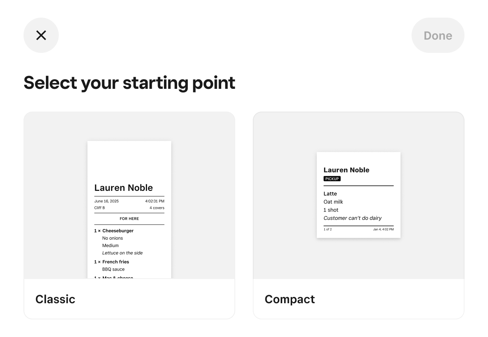
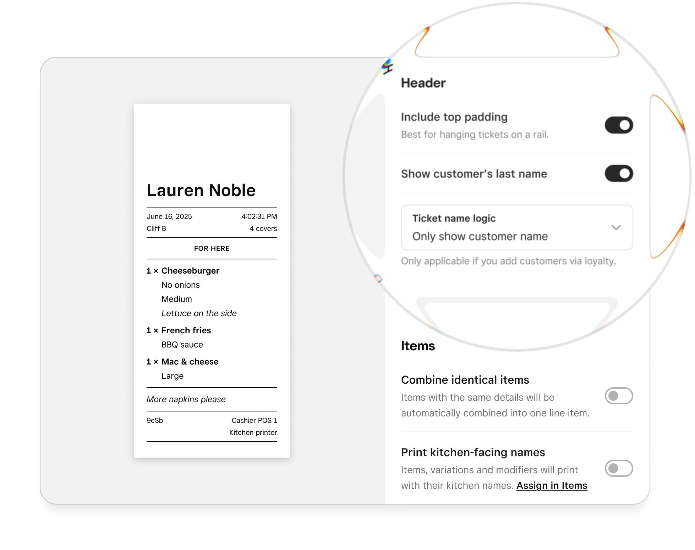
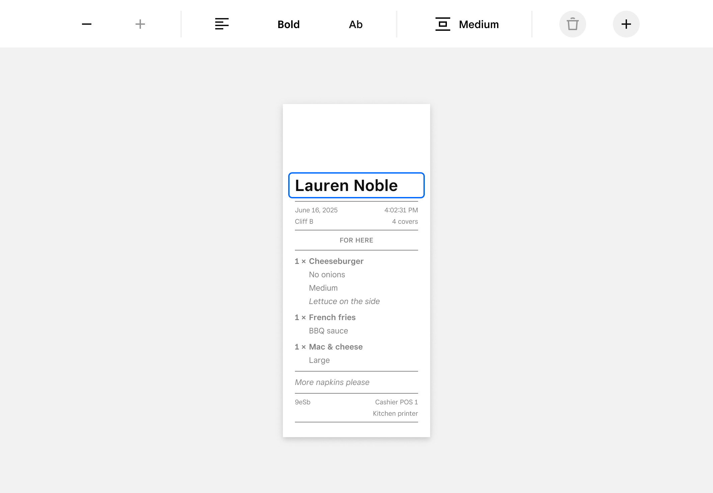
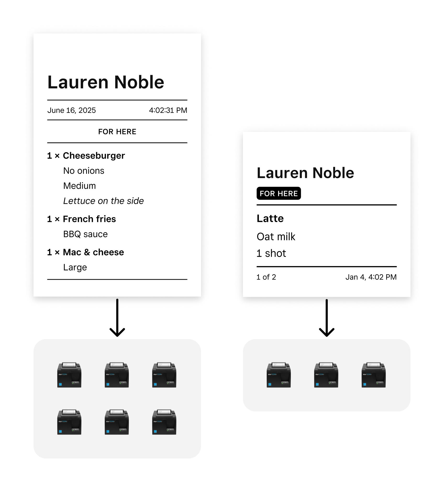
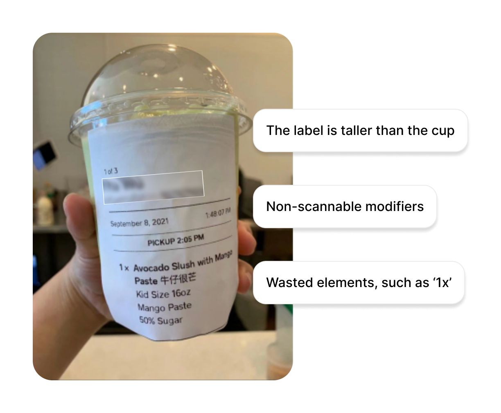
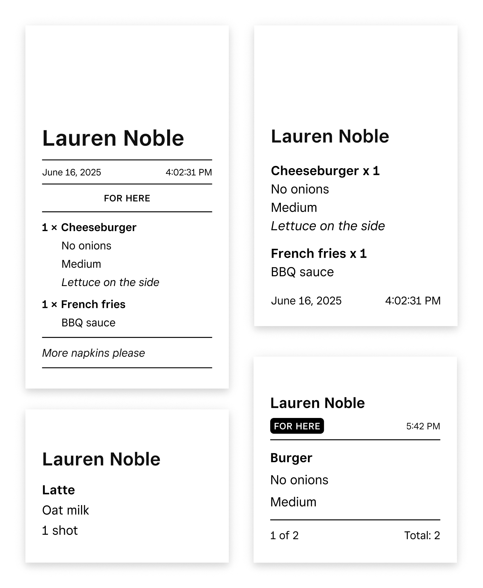
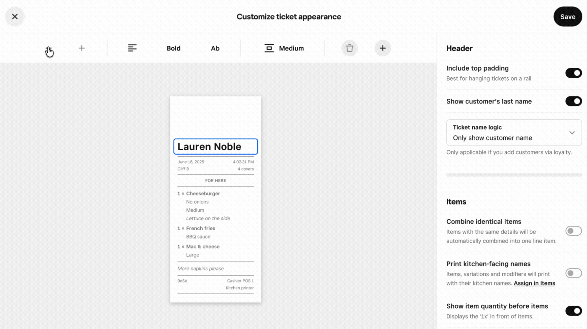
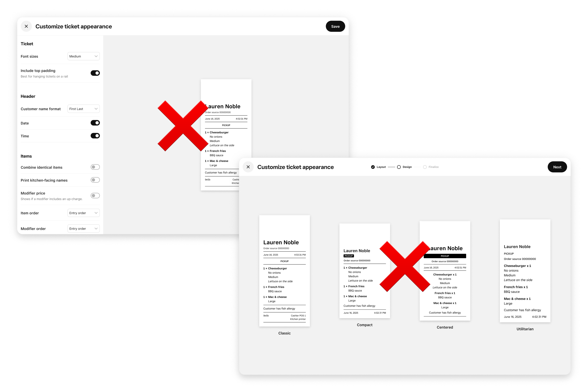
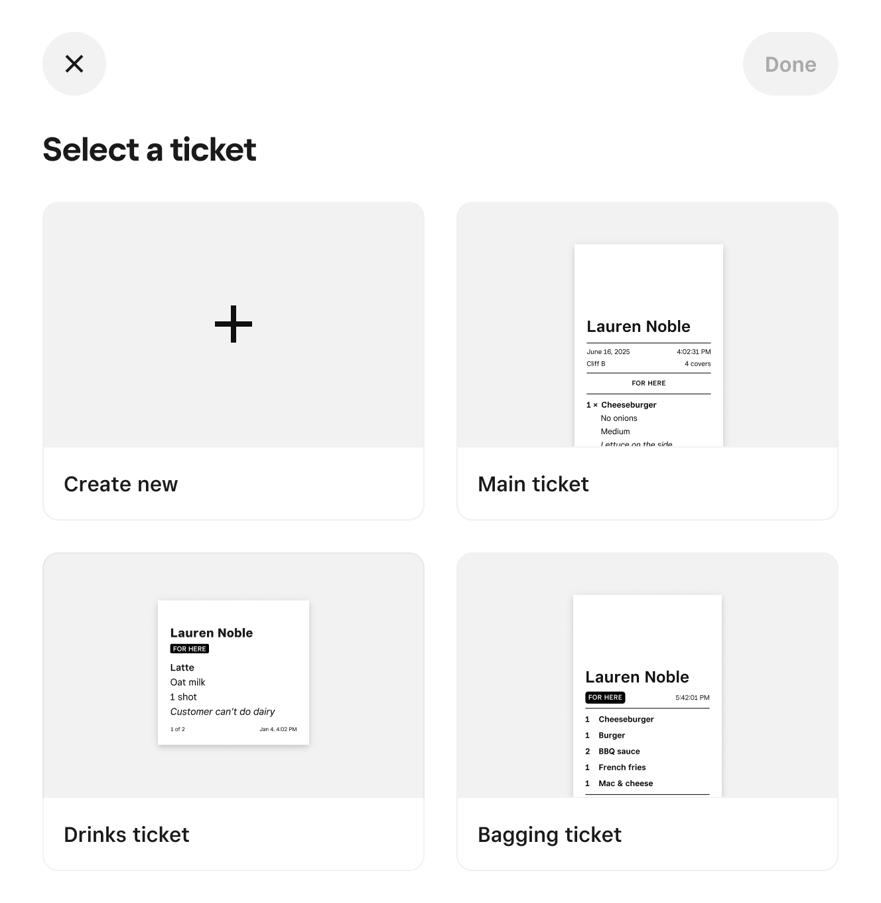

Printed ticket customizer
Printed tickets are foundational to restaurant operations, but Square only supported a single/unoptimal ticket layout, making customization one of the most requested features across Square. The ticket customizer gives restaurants full control over how their kitchen tickets print.
Role
Product designer and product manager
Timeline
3 months
Goals
Increase operational efficiency & unblock sales
Remove one of the largest operational friction points for restaurants while unblocking sales where ticket customization was a requirement.
Systematize customization
Design a scalable ticket customization system that works across Dashboard, POS, and different kitchen printers.
The experience
From shareable customizations set on Web to tickets printing correctly every time:
Start with opinionated templates
Merchants start with opinionated templates designed for common restaurant workflows. Starting with templates lets sellers improve tickets immediately without configuring every detail.

Refine the broader ticket
Sellers first adjust the broad structure of the ticket, ordering of information, and overall organization, so the ticket matches their kitchen workflow.

Refine field by field
Merchant research showed that every field matters, from modifiers to font size and emphasis. Sellers can then fine-tune formatting so the most important information stands out during service.

Shareable tickets across fleet of printers
To ensure the solution scaled to 50+ location merchants, provided shareable tickets across large fleets of printers.

Process
1) Opportunity discovery & prioritization
Analyzed product requests to identify ticket customization as a high-impact opportunity affecting both seller efficiency and enterprise sales.
2) Product & design discovery
Reviewed competitor POS systems and existing Square ticket architecture to understand gaps and technical constraints.
3) Initial AI prototyping
Built interactive prototypes to explore layout customization concepts, preview behavior, and configuration structure.
4) Merchant interviews
Shared prototypes with restaurant owners and operators to understand real kitchen workflows and validate the direction.
5) Iteration & refinement
Adjusted the system based on feedback, focusing on speed of configuration and operational clarity.
6) Handoff & implementation
Delivered detailed designs, system logic documentation, and prototypes.
Business & merchant needs
Turning a business and merchant liability into a differentiator:
Sales blocker
Ticket customization a top requested feature across Square, frequently surfaced as a sales blocker. Competitors offered flexible layouts while Square forced every restaurant into the same format.

Merchants forced to work around Square
Because tickets could not be customized, restaurants had to change their kitchen workflows to fit Square's limitations. And the emerging inefficient layouts slowed food preparation.

Turning a weakness into a differentiator
Our goal was to transform tickets from a churn risk and sales blocker into a reason restaurants choose Square, given Square's positioning as highly merchant and design centric.

Engineering considerations
Fragmented printing architecture
Printing had grown into disperate code paths across printer types and order sources. Even small ticket changes required updates in multiple places.
Inconsistent tickets across devices
Rendering logic lived in several systems, which meant the same order could print differently depending on the device.
Preview versus real output
Merchants need to trust the preview. Printer constraints like spacing and character width made accurate previews challenging.
Designing a unified ticket system
We introduced shared ticket templates configured in Dashboard and used by POS when printing, ensuring consistent output across devices.
Designing & prototyping
After understanding these needs, I initially built AI prototypes to share with merchants to validate concepts. With that input, I then refined the concept, prototype, and designs:
AI prototyping
Prototypes simulated real configuration flows and ticket previews so merchants could evaluate layouts as if they were configuring the real system.

Design refinement
Gained insights via research that detailed refinement is a requirement for most restaurants. Adjusted prototypes and designs accordingly.

Building system for scale
Defined how layouts translate across different printers and printers in fleets inherit configuration. Merchants can easily pick existing templates to share across printers.

Building the product
Defining the path to the vision
As both product manager and designer, I structured the work into incremental milestones to deliver value quickly while building toward the vision.
Shipping value early
Initial milestones focused on opinionated templates and an MVP preview experience so sellers could quickly improve tickets without deep configuration.
Refinement and engineering alignment
Before implementation, I refined the requirements, designs, and prototypes. Prototypes helped align design and engineering, reducing back and forth.